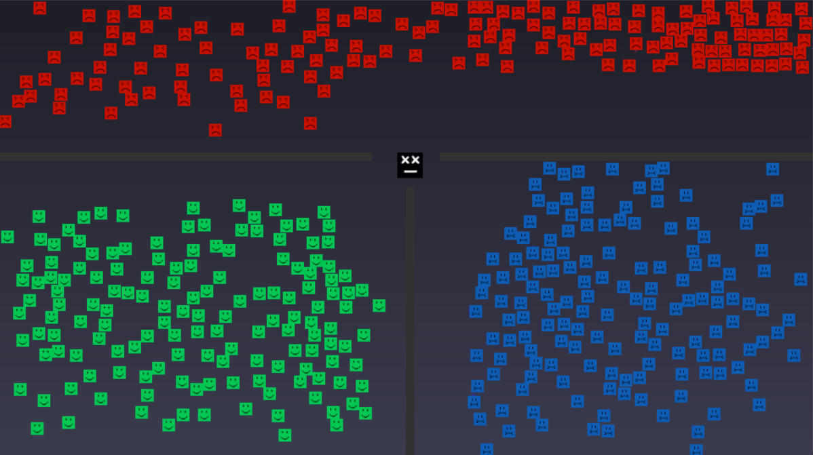

Expérience en Entreprise (ABT)
CRM Contact Manager

Architecture N-Tier, C# WPF, API REST & MySQL. Intégration téléphonie 3CX.
Déploiement : IIS & Velopack
Utilitaire RPA (SQL/Excel)
Script Python d'automatisation. Exécution de requêtes SQL et export sécurisé vers Excel.
Réseau Sites WordPress

Déploiement de plusieurs sites vitrines pour les agences. Gestion de l'hébergement et du SEO.
3 / 6
Projets Personnels
POC Backend Multijoueur

Jeu au tour par tour (Node.js/WebSockets). Communication temps réel et concept de "Server Authority".
Simulation Algo POO

Simulation Pierre-Feuille-Ciseaux (Python). Approfondissement de la POO, gestion des collisions et de comportements.
4 / 6